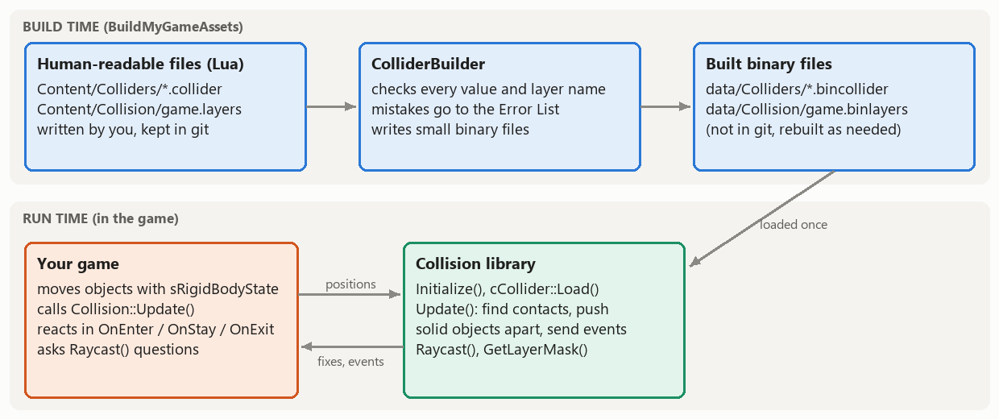
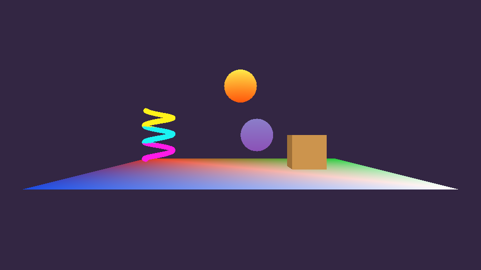
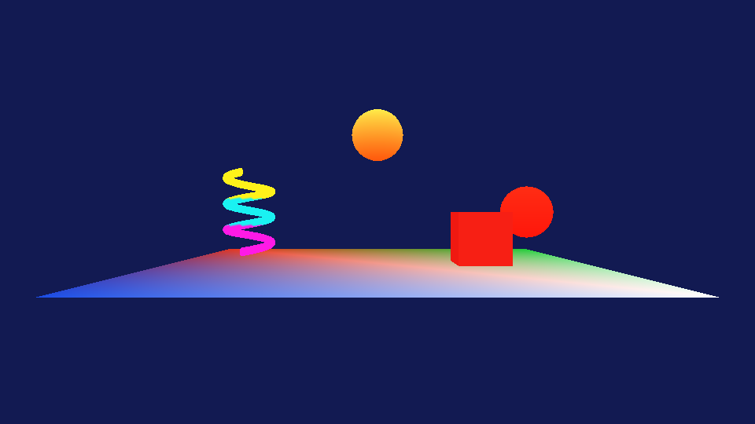
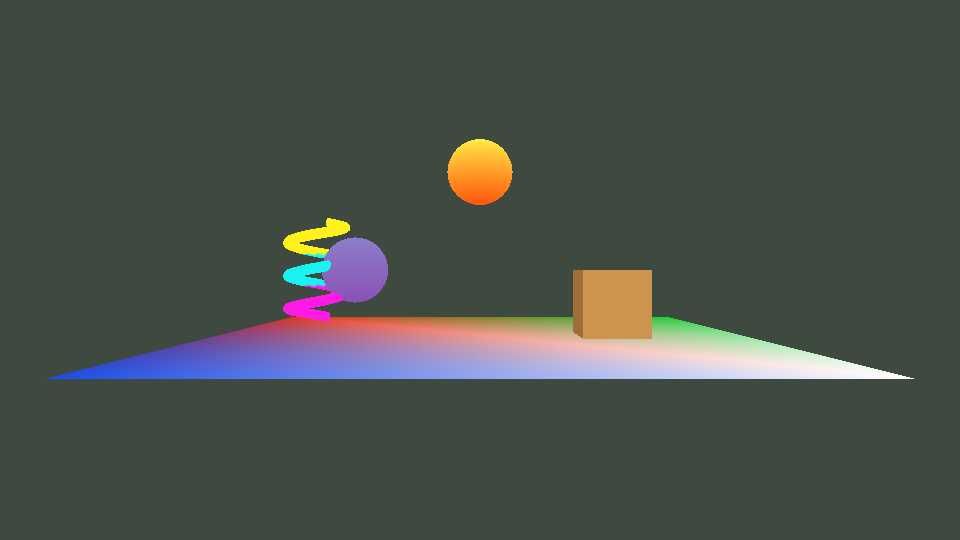
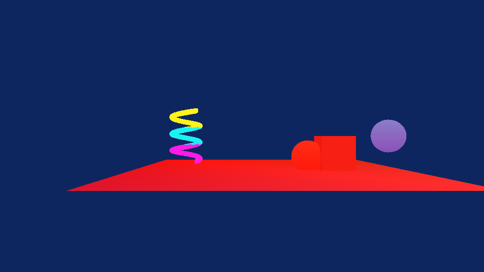
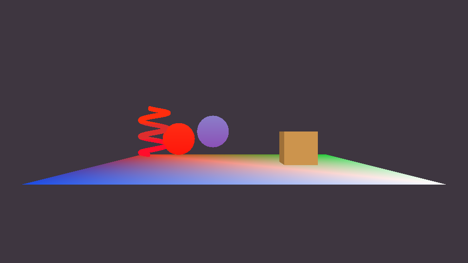

Engine System Update #1: Collision
The Collision library and ColliderBuilder work: both data formats with build-time errors, small binary files, overlap tests for every pair of shapes, and enter / stay / exit events in MyGame
MyGame.exe. ESC closes the game. The arrow keys move the orange sphere (the player); W/A/S/D move the camera and Q/E turn it. Anything that is touching another collider is drawn red, and every touch that starts or ends is written to eae6320.log next to the exe.
Where the project is
My Engine System is a collision system: colliders (spheres and axis-aligned boxes) described in data files and attached to game objects, collision layers that decide what can touch what, and events that tell the game when two colliders start touching, keep touching and stop touching. Next week it will also push solid objects apart and answer raycasts. This is what I planned for this first update in my proposal, and what is done:
| Planned for Update #1 | Status |
|---|---|
| Collision library and ColliderBuilder projects | Done. Engine/Collision is a static library and Tools/ColliderBuilder a builder; MyGame references Collision and BuildMyGameAssets depends on ColliderBuilder. |
| Both file formats with build-time errors | Done. A layers file and a collider file (Lua). Every mistake I could think of is reported in Visual Studio's Error List with the file and the line. |
| Loading | Done. A built collider is one 32-byte struct; the layers file is four pieces. Both are checked when they are loaded. |
| Overlap tests for all shape pairs | Done. Sphere-sphere, sphere-box and box-box, each with a contact normal and penetration depth (12 unit tests). |
| Enter / stay / exit events printed to the log in MyGame | Done. Every object in MyGame has a collider; touches are logged and touching objects are drawn red. |
A few things that I had planned for next week are already in, because they turned out to be small once the rest existed: the layer table is used at run time (colliders whose layers don't interact are never tested), static colliders are never tested against each other, colliders can be disabled and enabled, and it is safe to release a collider from inside an event.

The demo





This is the log from the run in the fourth screenshot. The system writes the layers when it starts, which helps when something doesn't collide. The rest is written by MyGame's event functions:
Collision: initialized with 4 layers from "data/Collision/game.binlayers"
Collision: layer 0 "world" touches: player, enemy
Collision: layer 1 "player" touches: world, enemy, pickup
Collision: layer 2 "enemy" touches: world, player
Collision: layer 3 "pickup" touches: player
The application was successfully initialized
Collision: patroller started touching crate (normal -1.00 +0.00 +0.00, depth 0.040)
Collision: crate started touching patroller (normal +1.00 +0.00 +0.00, depth 0.040)
Collision: patroller stopped touching crate (OnStay was called 24 times in between)
Collision: crate stopped touching patroller (OnStay was called 24 times in between)
Collision: player started touching floor (normal +0.00 +1.00 +0.00, depth 0.000)
Collision: floor started touching player (normal +0.00 -1.00 +0.00, depth 0.000)
Collision: player started touching crate (normal -1.00 +0.00 +0.00, depth 0.067)
Collision: crate started touching player (normal +1.00 +0.00 +0.00, depth 0.067)The two sides of every pair get opposite normals, because a normal always points from the other collider toward the one being told. The depths are small because the objects move at most 0.13 units per simulation update (15 per second), and a touch is found in the first update in which they overlap. The floor's depth is 0: the player stopped exactly on top of it, and shapes that are within 0.001 units of each other count as touching, so an object resting on another doesn't flicker between touching and not touching because of floating point error.
Using it from a game
This is all the code a game needs (shortened from MyGame; in my game sGameObject has a LoadCollider() helper and every object gets the same event functions):
// cMyGame::Initialize(): the layers first, because every collider's layer is checked against them
Collision::Initialize( "data/Collision/game.binlayers" );
// A collider is attached to the rigid body of the object it belongs to, and follows it from then on
Collision::cCollider::Load( "data/Colliders/player.bincollider", m_object_player.rigidBodyState, m_object_player.collider );
// userData is how an event finds out which object the other collider belongs to
m_object_player.collider->userData = &m_object_player;
m_object_player.collider->OnEnter = [this]( const Collision::sContact& i_contact )
{
++m_object_player.touchCount; // (the object is drawn red while this isn't 0)
const auto* const other = static_cast<const sGameObject*>( i_contact.other->userData );
Logging::OutputMessage( "Collision: player started touching %s", other->name );
};
m_object_player.collider->OnExit = [this]( const Collision::sContact& ) { --m_object_player.touchCount; };
// cMyGame::UpdateSimulationBasedOnTime(): move everything as usual, then let the collision system look
m_object_player.Update( i_elapsedSecondCount_sinceLastUpdate );
m_object_patroller.Update( i_elapsedSecondCount_sinceLastUpdate );
Collision::Update(); // <- the events are sent from here
// cMyGame::CleanUp(): release the colliders, then clean up the system
m_object_player.collider->DecrementReferenceCount();
Collision::CleanUp();A collider follows the rigid body that it was loaded with, so the game keeps moving objects exactly as before (velocity, acceleration, sRigidBodyState::Update()) and the collision system reads their positions when Collision::Update() runs. The one rule is that the rigid body must not move in memory while the collider exists (a member of the game is fine, an element of a std::vector that grows is not), and the header comments say so.
The data
The layers file
One file per game lists its layers (at most 32) and the pairs of layers that touch each other. Pairs go both ways, and a layer can be paired with itself (e.g. { "enemy", "enemy" } if enemies should bump into each other).
-- MyGame_/Content/Collision/game.layers
return
{
layers =
{
"world", -- the floor and the crate (both static)
"player", -- the sphere that the arrow keys move
"enemy", -- the sphere that patrols back and forth on its own
"pickup", -- the spinning coil (a trigger)
},
-- The pairs of layers that touch each other;
-- colliders in layers that aren't paired here pass through each other without any events
interactions =
{
{ "player", "world" },
{ "player", "enemy" },
{ "player", "pickup" },
{ "enemy", "world" },
-- (enemies don't collect pickups, so "enemy" and "pickup" aren't paired)
},
}Collider files
One file for every kind of collider. Only shape, its size and layer are required. A sphere has a radius, a box has a halfSize (half of its size along each axis). center is an optional offset from the object's position, isTrigger marks a collider that will only report overlaps (it will never push anything once pushing exists), and isStatic marks one that never moves.
-- MyGame_/Content/Colliders/player.collider
return
{
shape = "sphere",
radius = 0.5,
layer = "player",
}
-- MyGame_/Content/Colliders/floor.collider
return
{
shape = "box",
halfSize = { x = 4.0, y = 0.05, z = 4.0 },
center = { y = -0.05 }, -- (any component that isn't written is 0)
layer = "world",
isStatic = true,
}
-- MyGame_/Content/Colliders/spinner.collider
return
{
shape = "box",
halfSize = { x = 0.55, y = 0.85, z = 0.55 },
layer = "pickup",
isTrigger = true,
isStatic = true,
}What ColliderBuilder checks
ColliderBuilder reads both kinds of file with Lua and reports every problem with OutputErrorMessageWithFileInfo(), so a mistake fails the asset build and shows up in the Error List. These are the actual messages for broken files that I made to test it (paths shortened):
colliders/player.collider(16): error : The collider file has an unknown key "isTriger" (the valid keys are: "shape", "radius", "halfSize", "center", "layer", "isTrigger", "isStatic")
colliders/player.collider(15): error : The layer "plaeyr" isn't in the game's layers file (Collision/game.layers); the layers are: "world", "player", "enemy", "pickup"
negative.collider(4) : error : The "radius" must be a number greater than 0 (it is -1)
spherehalf.collider(5) : error : A sphere doesn't have a "halfSize" (only a box does): remove it, or change the shape to "box"
nohalf.collider(3) : error : A box must have a "halfSize" table (half of its size along each axis, e.g. { x = 1.0, y = 0.5, z = 1.0 }) instead of a nil
capsule.collider(3) : error : The shape "capsule" isn't one that the collision system knows (use "sphere" or "box")
centerkey.collider(5) : error : The "center" table has an unknown key "w" (the valid keys are: "x", "y", "z")
flag.collider(6) : error : "isStatic" must be true or false (instead of a string)
syntax.collider(5) : error : The collider file couldn't be loaded: '}' expected (to close '{' at line 3) near 'radius'
unknown.layers(7) : error : Interaction 2 refers to the layer "wrold", which isn't in the "layers" table (the layers are: "world", "player")
duplicate.layers(7) : error : The layer "world" is listed more than onceLua only knows the line number of a syntax error: a value in a table doesn't remember where it was written. To make double-clicking every error go to the right line anyway, the builder searches the file for the key (radius =) or the quoted name ("plaeyr") that the error is about, ignoring comments, including --[[ ]] blocks, so that a name mentioned in a comment isn't found by mistake. For a duplicated layer it finds the second occurrence. Misspelled keys are errors rather than being ignored, because isTriger = true would otherwise silently make a solid collider. A value that belongs to the other shape is also an error: a sphere with a halfSize almost always means that the shape was changed and the size wasn't.
Building them
This is what a game adds to AssetBuildFunctions.lua and AssetsToBuild.lua (it will be in the user guide):
-- AssetBuildFunctions.lua (add once; ColliderBuilder.exe builds both kinds of file)
local collisionLayersRelativePath = "Collision/game.layers"
NewAssetTypeInfo( "collisionlayers",
{
ConvertSourceRelativePathToBuiltRelativePath = function( i_sourceRelativePath )
local relativeDirectory, file = i_sourceRelativePath:match( "(.-)([^/\\]+)$" )
local fileName = file:match( "([^%.]+)" )
return relativeDirectory .. fileName .. ".binlayers"
end,
GetBuilderRelativePath = function()
return "ColliderBuilder.exe"
end,
}
)
NewAssetTypeInfo( "colliders",
{
ConvertSourceRelativePathToBuiltRelativePath = function( i_sourceRelativePath )
local relativeDirectory, file = i_sourceRelativePath:match( "(.-)([^/\\]+)$" )
local fileName = file:match( "([^%.]+)" )
return relativeDirectory .. fileName .. ".bincollider"
end,
GetBuilderRelativePath = function()
return "ColliderBuilder.exe"
end,
RegisterReferencedAssets = function( i_sourceRelativePath )
-- Every collider uses the game's layers file, so it is built whenever any collider is
RegisterAssetToBeBuilt( collisionLayersRelativePath, "collisionlayers" )
end,
ShouldTargetBeBuilt = function( i_lastWriteTime_builtAsset )
-- A built collider stores the index of its layer, so it is rebuilt whenever the layers file changes
local path_layers = FindSourceContentAbsolutePathFromRelativePath( collisionLayersRelativePath )
if path_layers then
return GetLastWriteTime( path_layers ) > i_lastWriteTime_builtAsset
else
return true
end
end,
}
)
-- AssetsToBuild.lua (list your own files)
collisionlayers = { "Collision/game.layers" },
colliders =
{
"Colliders/player.collider",
"Colliders/patroller.collider",
"Colliders/floor.collider",
"Colliders/crate.collider",
"Colliders/spinner.collider",
},A collider names its layer, and ColliderBuilder turns the name into the layer's index at build time, so the game never compares strings. That makes every collider depend on the layers file, which is handled in two places. The builder finds the layers file at Collision/game.layers in the game's content directory (the asset build passes that directory to builders in the GameSourceContentDir environment variable). And the colliders asset type tells the build system about the dependency: ShouldTargetBeBuilt() rebuilds every collider when the layers file is newer (I checked: touching game.layers rebuilt all five colliders), and RegisterReferencedAssets() registers the layers file whenever a collider is built (the asset build system's hook for assets that use other assets), so listing it in AssetsToBuild.lua is optional.
The binary files
Both kinds of built file are as simple as I could make them, because loading should be nothing more than reading:
player.bincollider (32 bytes: one ColliderFormats::sCollider)
00 00 00 00 00 00 00 00 00 00 00 00 center (0, 0, 0)
00 00 00 3F 00 00 00 3F 00 00 00 3F halfSize (0.5, 0.5, 0.5) (a sphere's bounding box)
00 00 00 3F radius 0.5
00 01 00 00 shape 0 = sphere, layer 1 = "player", flags 0, unused
floor.bincollider
00 00 00 00 CD CC 4C BD 00 00 00 00 center (0, -0.05, 0)
00 00 80 40 CD CC 4C 3D 00 00 80 40 halfSize (4, 0.05, 4)
00 00 00 00 radius 0 (boxes don't use it)
01 00 02 00 shape 1 = box, layer 0 = "world", flags 2 = static, unused
game.binlayers (62 bytes: four pieces)
04 00 00 00 4 layers
06 00 00 00 0D 00 00 00 03 00 00 00 interaction masks: world = 0110 (player, enemy),
02 00 00 00 player = 1101, enemy = 0011, pickup = 0010
00 00 00 00 06 00 00 00 0D 00 00 00 where each name starts: 0, 6, 13, 19
13 00 00 00
77 6F 72 6C 64 00 70 6C 61 79 65 72 "world\0player\0enemy\0pickup\0"
00 65 6E 65 6D 79 00 70 69 63 6B 75
70 00A collider's file is one struct, ColliderFormats::sCollider: two vectors, a float and four bytes, exactly 32 bytes with no hidden padding (a static_assert checks it), so the builder writes it with one write and the game loads it with one copy:
// cCollider::Load(): the built file is exactly one struct, so loading it is one read and one copy
Platform::sDataFromFile dataFromFile;
Platform::LoadBinaryFile( i_path, dataFromFile, &errorMessage );
if ( dataFromFile.size != sizeof( ColliderFormats::sCollider ) ) { /* report the file and fail */ }
ColliderFormats::sCollider colliderData;
std::memcpy( &colliderData, dataFromFile.data, sizeof( colliderData ) );
// Then it is checked (a built file can be damaged, or out of date if the layers changed),
// and the new collider is added to the worldFor a sphere, halfSize is filled in with the radius, so center ± halfSize is the bounding box of either shape and the quick test before the exact one doesn't need to know which shape it has. The layers file keeps the layer names (with an offset for each so that none have to be searched for) because a game needs them at run time, for example Collision::GetLayerMask( "world" ) for next week's raycasts. The system keeps the loaded file in memory and points into it instead of copying the names. The files are the same on both platforms, since they only contain floats and small integers and both of our platforms are little-endian; if a platform ever needed something different, the builder is where it would change.
How it works at run time
Everything happens in Collision::Update(), which the game calls once per simulation update after moving its objects:
- Remove the colliders that the game has released (see Lifetime below), sending OnExit to whatever they were still touching. This happens first, before anything reads a rigid body that may no longer exist.
- Calculate every collider's shape in world space once (the rigid body's position plus the offset from the file).
- Test every pair that could touch. A pair is skipped without any math if either collider is disabled, if both are static (they can never start or stop touching), or if the layers file doesn't pair their layers: one AND of the first layer's mask with the second layer's bit. Then the bounding boxes are compared, which rejects almost every pair cheaply, and only the pairs that are left get the exact test for their shapes.
- Compare with the previous update. The colliders are kept in the order they were created, so the list of touching pairs comes out sorted, and so does the list from the previous update. One walk through both lists side by side finds the pairs that are only in the old list (exit), only in the new one (enter), or in both (stay). Nothing is searched and nothing is allocated per collider.
- Send the events: all the exits, then the enters, then the stays. Both colliders of a pair are told, each from its own point of view: "other" is the other collider, and the normal points from the other collider toward this one, so the two sides get opposite normals (see the log above).
- Remove the colliders that were released from inside an event, so that whatever they were touching gets its OnExit in the same update.
The shape tests
- Sphere and sphere: they touch if the distance between the centers is at most the sum of the radii. The squared distance is compared first, so the square root is only needed for pairs that touch. The normal is along the line between the centers (straight up if the centers are in the same place).
- Sphere and box: clamp the sphere's center to the box to get the box's closest point; they touch if that point is inside the sphere, and the normal points from that point to the center. If the center is inside the box, the sphere leaves through the nearest face, and the depth is the radius plus the distance to that face.
- Box and box: they touch if they overlap along all three axes, and they are separated along the axis where they overlap the least.
The boxes are axis-aligned: they don't rotate with their objects. That is what I proposed (oriented boxes are a stretch goal), and it works for the spinner's trigger because the coil only turns around its vertical axis.
Lifetime, and changes made inside events
This was the part that needed the most thought. Colliders are reference counted like meshes, but while a collider is in the world the system holds a reference of its own. So when the game releases a collider, even from inside an event, the collider doesn't disappear while the system is still using it, and the "other" collider in a contact is always valid during the event. The system sees that it is the only owner left, sends OnExit to whatever the collider was touching, and gives up its reference, which deletes it. A collider that the game has released never gets another event, because its functions probably refer to an object that is gone. Each function is copied before it is called, so a function that replaces itself (collider->OnStay = nullptr; inside OnStay) is safe. Calling Update() or CleanUp() from inside an event is refused with an assert. Everything else that a game changes during an event (moving an object, disabling a collider, loading a new one) is simply seen by the next update.
The interface
A game includes Engine/Collision/Collision.h. Its interface is Collision::Initialize(), CleanUp(), Update() and layer lookups (GetLayerMask(), GetLayerIndex(), GetLayerName(), DoLayersInteract()), plus cCollider: Load(), the three event functions, userData, SetEnabled(), reference counting and getters for its shape, size, center, layer and flags. Every header has comments written for someone using the system rather than for me.
It is platform-independent: the public headers only use the engine's math and physics types and the standard library (std::function for the events). Collision math has nothing platform-specific in it, and the only platform-specific code involved is the engine's existing reference-counting macro, so there was no need for a .win.cpp file. The bookkeeping (the colliders, the pairs, the layers) is in an internal class, Internal::cWorld, which cCollider makes a friend so that nothing about it has to be public.
Testing
- 42 unit tests in a small program that I built against the Debug library (it isn't in the repository): 12 for the shape tests (overlap, gap, exactly touching, the same center, a box's edge, a center inside a box, the order of the shapes) and 30 for the system (the layer table and lookups, static pairs, enter / stay / exit with the right "other" and opposite normals, disabling and enabling, a collider released between updates and from inside its partner's OnEnter, a function that replaces itself, and CleanUp() while the game still holds colliders). All pass.
- 16 broken data files for ColliderBuilder; the messages above are from them.
- All four configurations (Debug/Release, x64/x86) build from an empty temp/ folder with no errors and no warnings. Building only the game and running it shows "Initialization failed" and exits with code 1 (the first thing it can't find is the layers file); after building BuildMyGameAssets it runs.
Next: Update #2 (November 10)
- Solid response: a dynamic collider that touches a static one is pushed out along the normal by the penetration depth, two dynamic ones are pushed apart equally, and the part of the velocity that points into the surface is removed (otherwise our render-time extrapolation would draw objects sinking into walls). Triggers never push.
- Raycasts against spheres (quadratic) and boxes (slab method), filtered by a layer mask, returning the closest hit.
- A real demo: walls and the floor stop the player, the coil becomes a pickup that is collected (disabled) in OnEnter, and a raycast checks whether the player is on the ground.
- The first version of the user guide, so that classmates can start using the system in their final projects.